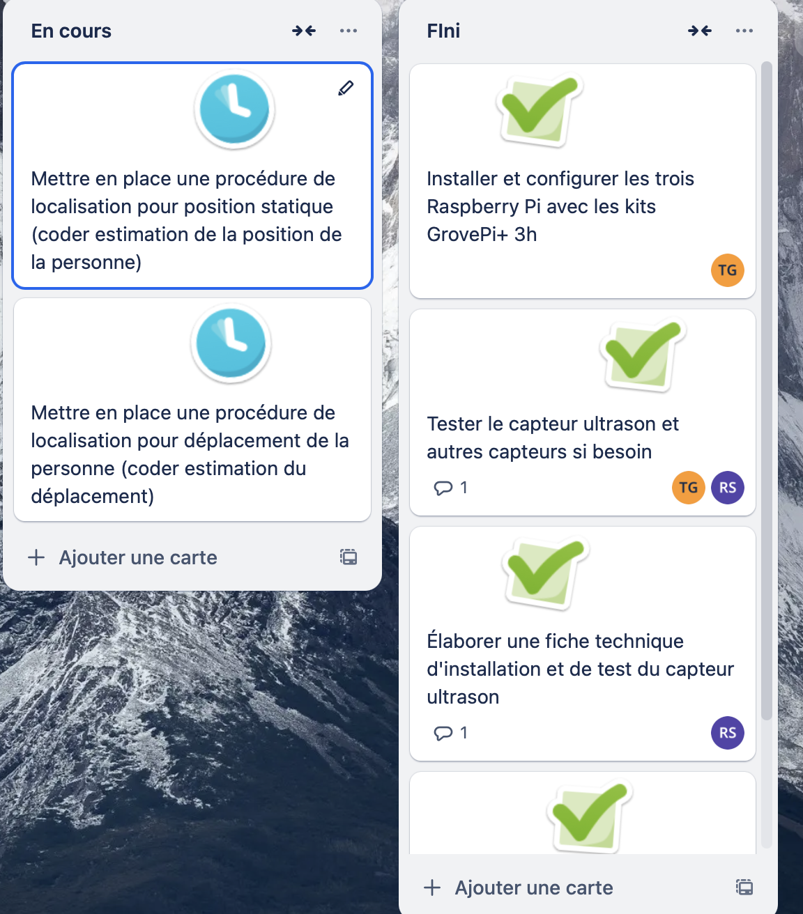

Diagramme de GANTT
Synthèse finale du projet sur un diagramme de GANTT à l'aide du logiciel GanttProject.

Utilisation d'outils collaboratifs
Afin de nous organiser dans la réalisation des différentes tâches, nous avons mis en place un Trello.
Nous avons fait le choix de répartir sur l'espace de travail, différents tableaux, comme le présente la capture suivante :
Voici le contenu d'un des tableaux, par exemple, le tableau « Ultrason » :

Approche Personnelle et Problèmes de Chaque Membre
Approche de VIGUIER Marc
Nombre d'heures passées : 83 Heures dont 47 de travail Personel
Problèmes rencontrés et solutions :
Problème → La conversion en binaire ne se passait pas correctement (division infinie par 0)
Solution → j'ai arrondi au millième les atténuations (afin de n'avoir que 1 à 5 ou 6 occurrences de chacune des valeurs) et ensuite je les ai multipliées par 1000 avant de les transformer en binaire.
Problème → aucune idée de comment gérer un affichage graphique dans un code python
Solution → étude et utilisation de la librairie tkinter
Problème → aucune idée de comment intégrer une feuille excel dans un code python
Solution → étude et utilisation de la librairie pandas
Problème → aucune idée de comment récupérer les infos sortant du terminal et de les utiliser au sein d’un code python
Solution → étude et utilisation de la librairie io et sys
Difficulté : 4/5
Approche de GOUENNOU Tristan
Nombre d'heures passées : 36 Heures
Problèmes rencontrés et solutions :
Problème → Localisation d’une personne précise ave cles capteurs imposible
Solution → Adapté le cahier des charges pour pouvoir détecter la personne dans une zone précise
Difficulté : 4/5
Approche de SIMARD Romain
Nombre d'heures passées : 40 Heures
Problèmes rencontrés et solutions :
Problème → savoir quand la personne revient en arrière il faillait détecter si elle repasse devant le capteur.
Solution → création d’une liste qui permet de connaitre la zone précédente donc savoir si la personne à fait demi-tour
Difficulté : 4/5
Approche de CARLET Thomas
Nombre d'heures passées : 33 Heures
Problèmes rencontrés et solutions :
Une synthèse détaillée est disponible en suivant ce lien.
Read-me github
Problème → Trop d'erreurs de mesures sont renvoyés, ce qui faire que la fonction de filtrage renvoie toujours 0 (affichant Distance: 0cm).
Solution → Pour parer ce problème, une nouvelle mesures est prise dès que la valeur 65535 est détectée
Problème → Visiblement, quand la boucle for defiltration de valeurs s’exécute, elle ne regarde qu’une fois sa condition de fonctionnement. Il est donc inutile et sans effet de vouloir modifier cette condition, puisque seulement le contenu de la boucle est répété.
Solution → Utilisation d'une boucle while, qui elle relie sa condition de fonctionnement
-> en résolvant l'erreur du 65535, j'ai vu qu’il était possible de se soulager de la contrainte de devoir toujours mettre un obstacle de référence (servant de seuil) au démarrage du programme. Pour cela il suffi juste d’accepter les valeurs comprises entre 490 et 500 (qui correspond à la mesure max), en passant le seuil de 490 à 500. Ainsi, la mesure max est comprise comme étant une valeur de seuil utilisable.
Difficulté : 1,25/5
Approche de MOINE Fabien
Nombre d'heures passées : 45 Heures
Problèmes rencontrés et solutions :
Problème → La cartographie ne s’applique que pour un seul capteur, il reste à déterminer la cartographie pour les deux autres sans avoir à tout refaire.
Solution → Je réalise deux fonctions python qui permettent de retourner des matrices.
Problème → Les données sont envoyée en JSON sur le bus MQTT,
Solution → Utilisation de la bibliothèque JSON afin d’extraire la donnée
Problème → Les données sont envoyée sur 3 topic différent
Solution → s’abonner au topic des trois capteurs sae24/E102/son/# et trier ensuite les capteurs en fonction des deux premier bits
Problème → Les données récupérées sont en binaire
Solution → convertir du binaire vers le décimal, puis diviser par 1000 (Il s'agit d’un choix que nous avons fait pour simplifier la transmission des données elles sont multiplier par 1000 dans le code de transmission vers le bus mqtt.J’effectue donc la transformation inverse dans le code pour préserver les données)
La donnée finale correspond à l'atténuation perçu par le capteur(ex : 0.014)
Problème → Comment trouver la position de l’objet à partir de la valeur d'atténuation et envoyer la position sur la DB
Solution → Le script récupère les tableaux excel de cartographie des salles et compare les valeurs d'atténuation reçues avec les case du tableau, toute les positions possible de l’objet pour cette valeur d'atténuation sont ensuite stockées dans une variable.
Le script fait de même pour les deux mesures suivantes qui corresponde aux deux autres capteurs
Grâce à la trilatération, le script détermine la position commune à tous les capteurs et détermine la position de l’objet.
Cette position ( de la forme (X;Y) est envoyée sur la base de données avec la date et l’heure.
Difficulté : 3,5/5
Approche de CLAVÉ Thomas
Nombre d'heures passées : 50 Heures
Problèmes rencontrés et solutions :
Problème → Affichage d'un tableau en fonction des dimentions de la salle
Solution → Créer un système de récusivité en créant Y lignes "tr" et pour chaque ligne X "td"
Problème → Affichage dynamique des positions
Solution → attribution de class via un script php et js permettant d'attibuer une mise en page via une class. Néamoins, j'ai dû modifier mon programme de création de tableau pour ajouter des class "pos_x" et "pos_y" pour les identifier et associer au résultat de la BDD.
Problème → Difficulté de gestion des données à travers les pages et scripts
Solution → Créer un système solide et fiable de paramètres $_SESSION
Difficulté : 3,5/5
Approche de MARTY Clément
Nombre d'heures passées :
Problèmes rencontrés et solutions :